Menu
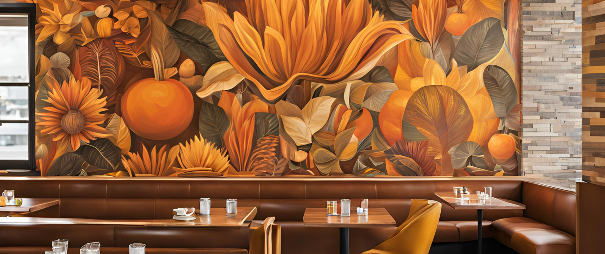
Select any of these traditional Tex-Mex fusion foods. learn and experience the history of Spanish culture and its food through your tastebuds, with a range of breakfast foods, entrees, appetizers, and desserts.
(Breakfast available until 12)
Breakfast
- Chilaquiles Verde/Red
Tortilla chips, salsa, fried eggs, queso fresco, avocado, and sour cream
- Breakfast Tacos
Scrambled eggs, chorizo, cheese, and potatoes on soft corn tortillas
- Tex-Mex Breakfast Bowl
Scrambled eggs, black beans, avocado, salsa, shredded cheese, and rice
- Tortilla Omelette
Eggs, tortillas, jalapeños, onions, and tomatoes, served with salsa
- Mexican Hotcakes
Fluffy pancakes topped with dulce de leche and fresh berries
- Huevos Rancheros
Fried eggs on a tortilla, smothered in salsa and served with refried beans
- Avocado Toast
With a Tex-Mex twist: toasted bolillo, smashed avocado, queso fresco, and pico de gallo
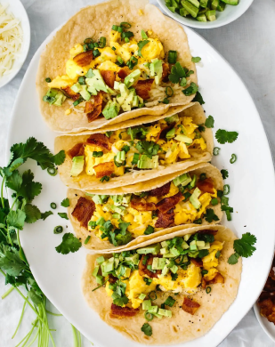
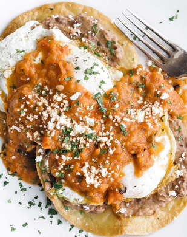
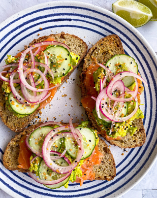
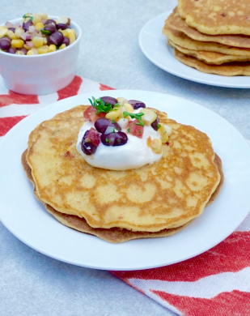
Appetizer
- Street Corn (Elote)
Grilled corn on the cob with cotija cheese, lime, and chili powder
- Loaded Nachos
Tortilla chips piled with melted cheese, black beans, jalapeños, sour cream, guacamole, and pico de gallo
- Queso Fundido
Melted cheese dip served with tortillas and chips
- Mini Quesadillas
Grilled tortillas stuffed with cheese and your choice of chicken, beef, or veggies
- Tex-Mex Poppers
Jalapeños stuffed with cheese, wrapped in bacon, and fried until crispy
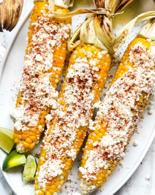
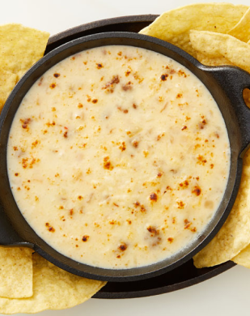
Salads
- Southwest Chicken Salad
Grilled chicken, avocado, black beans, corn, tomatoes, and crispy tortilla strips with chipotle ranch dressing
- Taco Salad
Ground beef or chicken, lettuce, cheese, tomatoes, and guacamole in a crispy tortilla bowl
- Grilled Shrimp Avocado Salad
Grilled shrimp, mixed greens, avocado, roasted corn, and cilantro-lime dressing
- Quinoa & Black Bean Salad
Quinoa, black beans, avocado, tomatoes, and a tangy citrus vinaigrette
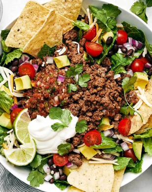
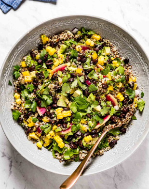
Soups
- Chicken Tortilla Soup
A hearty broth with shredded chicken, crispy tortilla strips, avocado, and cheese
- Pozole
Traditional Mexican soup with hominy, pork, and a red chili broth, served with radishes, lettuce, and lime
- Sopa de Fideo
Light tomato broth with thin vermicelli noodles and vegetables
- Black Bean Soup
Rich and smoky black beans topped with sour cream, cheese, and cilantro
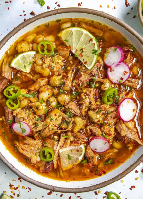
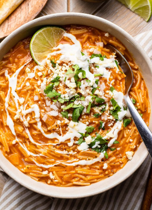
Sandwiches
(Make it deluxe with fries or coleslaw)
- Tex-Mex Chicken Sandwich
Grilled chicken breast with avocado, pepper jack cheese, and chipotle mayo on a brioche bun
- Carne Asada Torta
Thinly sliced steak, avocado, lettuce, tomato, and refried beans on a toasted bolillo roll
- Chorizo Burger
Beef and chorizo patty, grilled onions, queso, and jalapeños on a sesame bun
- Spicy Pulled Pork Sandwich
Shredded pork, pickled red onions, and chipotle BBQ sauce on a toasted bun
- Grilled Veggie Torta
Grilled peppers, mushrooms, zucchini, avocado, and queso fresco on bolillo bread
 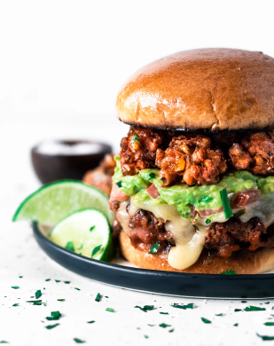
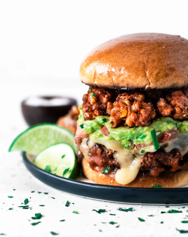
Entrees
- Carne Asada Plate
Grilled marinated steak, served with rice, refried beans, grilled onions, and tortillas
- Chicken Enchiladas
Rolled tortillas filled with chicken and smothered in red or green sauce, topped with cheese, served with rice and beans
- Fish Tacos
Grilled fish with cabbage slaw, pico de gallo, and chipotle mayo on soft corn tortillas
- Stuffed Poblano Peppers
Poblano peppers filled with cheese and beef or beans, served with rice and salsa
- Fajitas Tex-Mex Style
Your choice of chicken, steak, or shrimp served sizzling with onions, peppers, guacamole, sour cream, and tortillas
- Tamales Platter
Two tamales with your choice of filling (chicken, pork, or cheese) served with rice and beans
- Tex-Mex Plate
Combo of a chicken taco, cheese enchilada, and a small beef burrito, served with rice, beans, and salsa
 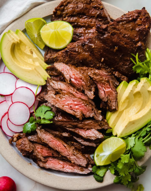
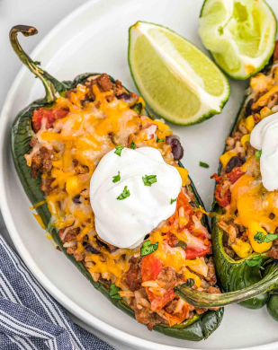
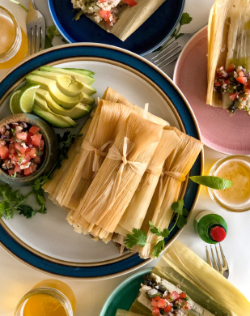
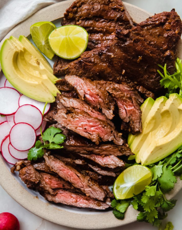
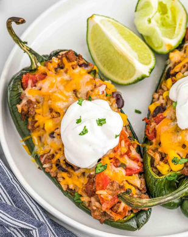
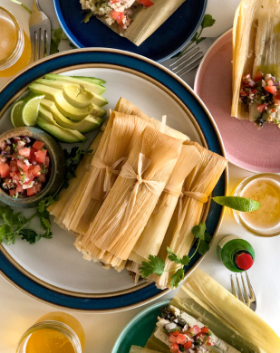
Desserts
- Churros with Chocolate Sauce
Crispy cinnamon-sugar churros with a rich chocolate dipping sauce
- Flan
Creamy caramel flan with a hint of vanilla
- Tres Leches Cake
A light sponge cake soaked in three kinds of milk, topped with whipped cream
- Sopapillas
Fried pastries dusted with cinnamon sugar, drizzled with honey
- Mexican Hot Chocolate Brownie
Rich chocolate brownie spiced with cinnamon and cayenne, served warm with vanilla ice cream
 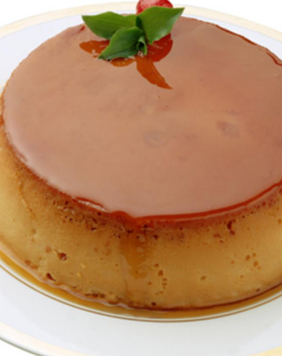
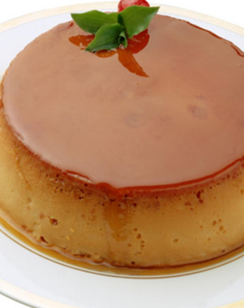
Drinks
Soft Drinks
- Mexican coa-Cola
- Jarritos (assorted flavors)
- Fresh Lemonade
- Horchata
- Agua de Jamaica (hibiscus tea)
- Iced tea
Cocktails
- Margarita
Classic lime, or try it frozen with mango or strawberry
- Paloma
Tequila with grapefruit soda and lime
- Michelada
Beer mixed with lime juice, hot sauce, and tomato juice
- Mexican Mule
Tequila, lime, and ginger beer
- Wine:
Red: Malbec, Cabernet Sauvignon
White: Sauvignon Blanc, Chardonnay
- Beer:
On Draft - Local Craft Beers
Bottles - Corona, Modelo, Pacifico, Dos Equis)
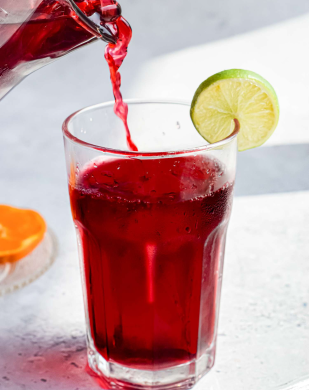
Lindasnyc@gmail.com
(555)-555-5555